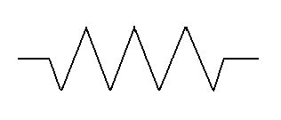

1.1 Conceptos y Caracteristicas.
Parametros Electricos
Electricidad.
-Flujo de electrones a traves de un conductor
Voltaje.
-Fuerza necesaria para mojer los electrones. Unidad volt (v).
Intencidad de corriente.
-Cantidad de electrones. Unidad Ampere (A)
Corriente Alterna (CA)
Es el tipo de corriente electrica por que la magnitud y su direccion acepta una variacion de tipo ciclico; la manera en la cual este tipo de corriente ocilara en forma senodial, se hace uan curva que sube y baja constantemente. En el norte de America la Corriente Alterna es de 100v y 60Hz.
Corriente Directa (CD)
Siempre fluye en la misma direccion en un circuito electrico. Los electrones fluyen continuamente en el circuito de la terminal negativa a la positiva, se mueve en una sola direccion y su flujo es constante en el tiempo. Lo usamos en las baterias, fuentes de alimentacion y generadores de corriente continua.

1.1.1 Generaciones de energias
Energia limpia.
Se denomina energia renovable a la energia que se obtiene de fuentes naturales virtualmente inagotables, ya sea por la inmensa cantidad de energia que contienen, o porque son capaces de regenerarse por medios naturales.
Ejemplos:
-Energia Eolica.
-Energia Solar.
-Energia Hidroelectrica.
Energia Sucia.
Las energias sucias son las que emiten gases que causan el efecto invernadero, son las energias que proceden del carbon, del gas y del petroleo. Tambien son energias sucias las que producen residuos toxicos com la energia nuclear.
Ejemplos:
-Energia Nuclear.
-Energia Termoelectrica.
1.2 Dispositivos Pasivos.
Dispositivos Pasivos
Son componentes electronicos que no producen amplificacion (ganancia) y sirven para controlar los parametros de un circuito electrico colaborando con el mejor funcionamento de los electrones activos (generalmente semiconductores), los conductores pasivos generalmente son resistencias, capacitancias e inductancias.
Resistencias
-Es un componente de los mas utilizados de la electronica, su funcion es oponerse al paso de la corriente, la corriente que pasa a traves de la misma depende del voltaje, del tamaño del material y de su conductividad.
La resistencia se mide en Ohms y su simbolo en circuitos es el siguiente:

Condensadores
-Es un componente importante en la electronica tambien llamadaos electrolitos estan formados por dos laminas de aluminio, recubiertos por una capa de oxido de aluminio el cual se usa como aislante (di-electrico) y entre esas capas una lamina de papel impregnado con un liquido conductor llamado electrolito. Una caracteristica del condesador es que al conectar el voltaje en sus placas, fluira una corriente electrica que se acumulara en cada una de ellas. Si se desconecta el voltaje, el condensador conserva la carga y la tension asociada por un lapso de tiempo, debe destacarse que este tipo de condensadores tiene polaridad el cual no debe conectarse de manera inversa porque puede explotar.
Los capacitores se miden en Faradios y su simbolo en circuitos es el siguiente: